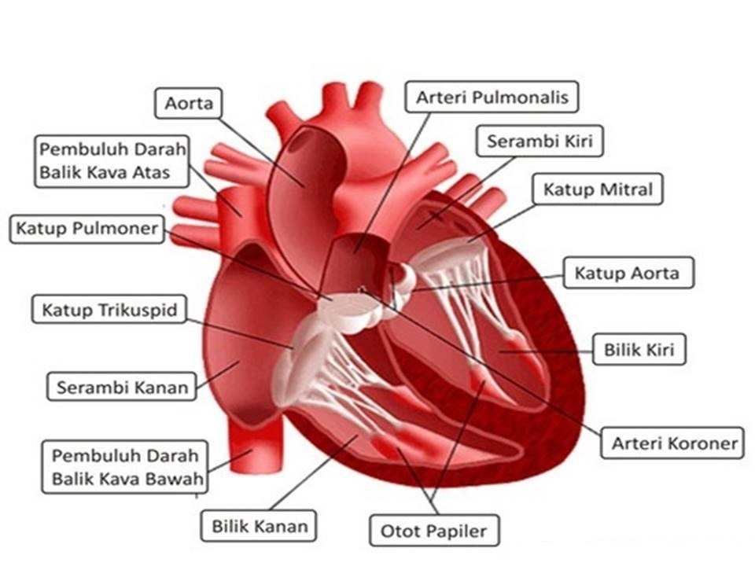

Jantung
Jantung adalah sebuah organ tubuh manusia yang berongga serta berotot yang berperan dalam sistem peredaran darah manusia. Jantung mengendalikan seluruh kegiatan peredarah darah, dengan melibatkan pembuluh darah sebagai salurannya. Jantung memompa darah ke seluruh tubuh melalui kontraksi berirama dengan bantuan listrik jantung. Darah ini dipompa ke seluruh tubuh.
Kandungan yang ada di dalam darah adalah nutrisi dan oksigen yang berguna untuk kelangsungan hidup sel-sel tubuh. Setelah digunakan oleh sel-sel tersebut, darah itu dikembalikan lagi ke jantung, dan begitu seterusnya.
Jantung memiliki empat ruang yang masing-masing memiliki fungsi tertentu. Organ ini terletak di dalam rongga dada tepatnya di bawah paru-paru sebelah kiri (pada umumnya), dan dilindungi oleh tulang dada (sternum) dan tulang rusuk (costae). Ukuran jantung lebih kurang sebesar kepalan tangan orang dewasa. Bentuk jantung lebih kurang mirip seperti kepalan tangan orang dewasa yang terbalik. Organ ini merupakan organ utama yang berperan dalam sistem kardiovaskular. Ukuran jantung kira-kira sebesar kepalan tangan orang dewasa atau memiliki panjang 12 cm, lebar 8 cm, dan tebal 6 cm, dengan berat sekitar 300 gram. Jantung terdiri dari otot-otot (muscular), apex (puncak), basis (dasar), atrium kana dan kiri, serta bilik kanan dan kiri. Hal menarik yang bisa kita ketahui dari organ yang satu ini adalah, mampu untuk memompa darah atau berdetak sebanyak 100.000 kali selama sehari. Oleh karena itu, darah yang dipompa olehnya mencapai 2000 galon darah atau setara dengan 7.571 liter darah segar ke segala sel-sel tubuh.
Jantung memiliki tiga lapisan otot (myocardium) yang berbeda dan masing-masing lapisannya memiliki fungsi yang berbeda pula. Otot-otot jantung ini harus selalu disuplai oleh darah segar yang dibawa oleh arteri coroner agar jantung tidak berhenti berdetak. Berikut adalah lapisannya :